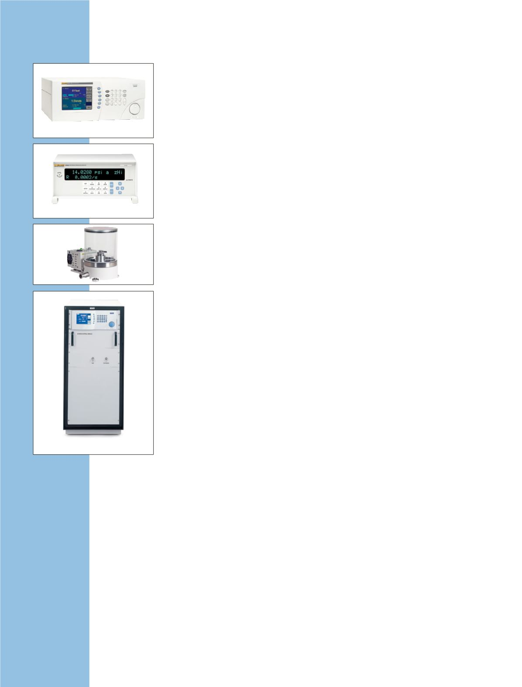

molbox1+
molbloc-L
molbloc-S
molstic-L
molstic-S
MFC Switchbox
GFS™
molbox RFM
MFC-CB™
Gasströmungs-
normale
molbox1+ Durchflussmonitor
0,125 % des Messwerts: nied-
rigste Unsicherheit für die
Gasströmungskalibrierung.
•
Ermöglicht die Abdeckung des
Durchflussbereichs von weniger
als 1 sccm auf über 5.000 slm mit
einer einzigen Benutzerschnitt-
stelle und transportablem System
•
Mit Echtzeitdurchflussmessungen
wird das Einstellen von analogen
Durchflussvorrichtungen schnell
und einfach
•
Keine sich bewegenden Teile, die
Druck-/Durchflussschwankungen
verursachen oder die Zuverlässig-
keit beeinträchtigen
•
Durchführung von vollautomati-
sierten Durchflusskalibrierungen
unter Verwendung des molbox-
Monitors mit der Software
„COMPASS for Flow“
•
Aktualisiertes Design
Laminares Durchflusselement
molboc-L
Laminare Durchflusselemente für
Durchflüsse von 1 sccm bis 100 slm.
•
Rückführbarkeit auf pri-
märe gravimetrische
Massenstrommessungen
•
Unterstützung von vielen Gasen
•
Kann mit vorhandenen
molbox1+- und molbox RFM-
Massedurchfluss-Messsystemen
sowie mit der COMPASS-Software
verwendet werden
•
Integrierter Filter zum Schutz vor
Kontaminierung
•
Integrierte Gastemperaturaufbe-
reitung und -messung
molbloc-S-Düsendurchflusse-
lement
Auf Sonic Düsen basierende molblocs
für Gasströmung bis 5.000 slm.
•
Deckt Bereiche bis zu 5.000 slm
in N
2
und Luft ab
•
Unterstützung von vielen Gasen
•
Verwendbar mit molbox1+ oder
vorhandenen molbox1 und
molbox RFM-Massenstrommoni-
toren und COMPASS-Software
•
Bewährtes kritisches
Durchfluss-Venturi- (Sonic)-
Düsen-Betriebsprinzip, das durch
primäre gravimetrische Kalibrie-
rung unterstützt wird
Referenzdurchflussmonitor
molbox RFM
Kompakter Durchflussmonitor
zur Durchführung von Massen-
durchflussmessungen unter
Verwendung von molbloc-L- und
molbloc-S-Durchflusselementen.
•
Rückführbarkeit auf pri-
märe gravimetrische
Massenstrommessungen
•
Wirtschaftliche Alternative zu
molbox1+ Monitor
•
± 0,5 % Messunsicherheit
•
Deckt mit molbloc-L den Durch-
flussbereich von 1 sccm bis
100 slm und mit molbloc-S den
Bereich bis 5000 slm ab.
•
Die Kits 5141/5142/5144 ent-
halten molbox-RFM, molbloc-L
und weitere Hardware in einem
vollständigen Kalibriersystem.
Befestigungssysteme molstic
Werden zur bequemen Befesti-
gung und zum Schutz von molbloc
Elementen verwendet, lassen sich
mit Prüflingen verbinden und bieten
Durchfluss- und Druckregelung.
molstic-L bei Verwendung für
molboc-L Massenstromelemente.
•
Schnellverbindereingang
•
2 Mikron (0,5 Mikron für nied-
rigen Durchfluss) -Filter zum
Schutz der stromabwärtigen
Komponenten
•
Einstellbarer Regler zum Schutz
der molbox-Transducer
molstic-S bei Verwendung für
molbloc-S Massenstromelemente.
•
In Installationsgrößen von
1/2 Zoll oder 1/4 Zoll verfügbar
•
Integrierte
Durchflussabschalt-/-messventile
Gasdurchfluss-Automatisie-
rungszubehör
Schaltkasten MFC-CB™
Eigenständige Einheit zur Einstel-
lung und Ablesung von analogen
Massendurchflussreglern (MFC) und
Massendurchflusszählern (MFM).
•
Einstellen und Ablesen von 0 bis
5 V oder 4 bis 20 mA auf zwei
Kanälen
•
Vollständige lokale Regelung
über die Frontplatte, RS-232- und
IEEE-488-Standardschnitt-
stellen ermöglichen die
Fernkommunikation.
MFC Switchbox
™
Dient der Stromzufuhr und wechselt
zwischen maximal fünf MFCs oder
MFMs an einem molbox1+- oder
MFC-CB-Kanal.
•
Dupliziert den MFC Kanal ohne
Umschalten von Kabeln
Primäre Gasströ-
mungs-normale
Dynamisches gravimetrisches
Massendurchflusssystem GFS
Primäres Normal für den Mas-
sedurchfluss zur Messung von
niedrigen Massedurchfluss-
mengen von Gasen mit geringer
Messunsicherheit.
•
Deckt den Bereich von 0,2 bis
200 mg/s für verschiedene Gase
ab (10 sccm bis 10 slm N2)
•
Messungen können unter
Verwendung des schrittweisen
Additionsverfahrens in höhere
Durchflussbereiche übertragen
werden
•
Durchflussmessunsicherheit
beträgt ± 0,013 % des
Messwerts
38
Gasströmungskalibrierung